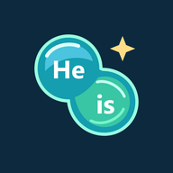

Kullanım Şartları
Bu site ve DilGames sosyal medya içerikleri, DilGames oyununu tanıtmak ve İngilizce öğrenmeye yardımcı olmak amacıyla LogicGate Studios tarafından hazırlanır. İçerikler bilgi amaçlıdır; izinsiz kopyalanıp ticari amaçla kullanılamaz.
"DilGames Social" yayın aracı yalnızca DilGames'in kendi hesaplarında kullanılır; üçüncü kişilere hizmet olarak sunulmaz. YouTube özelliklerini kullanırken YouTube Hizmet Şartları geçerlidir.
This site and DilGames social media content are provided by LogicGate Studios to promote the DilGames game and help people learn English. The DilGames Social publishing tool is used only on DilGames' own accounts and is not offered to third parties. YouTube features are subject to the YouTube Terms of Service.
İletişim / Contact: support.dilgame@gmail.com